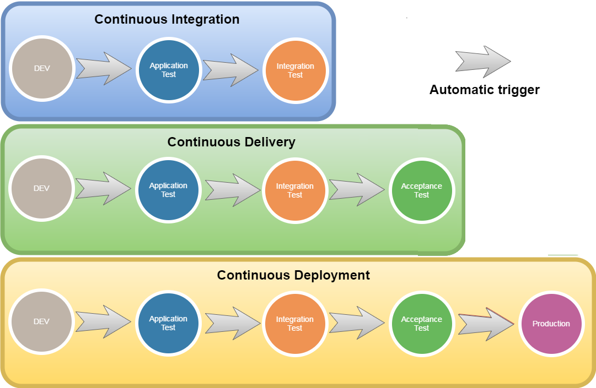

From 0 to Continuous Deployment
with Jenkins & Docker
Rafael "Bleidi" Souza
What is continuous ... ?

- Code's version control
- Dependency and configuration management
- Infrastructure as code
- Containerized enviroments
- Artifact repositories
- Continuous integration server
- Metrics & Log